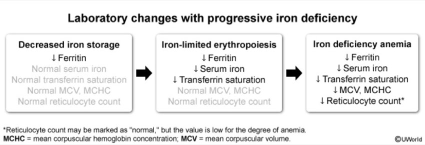
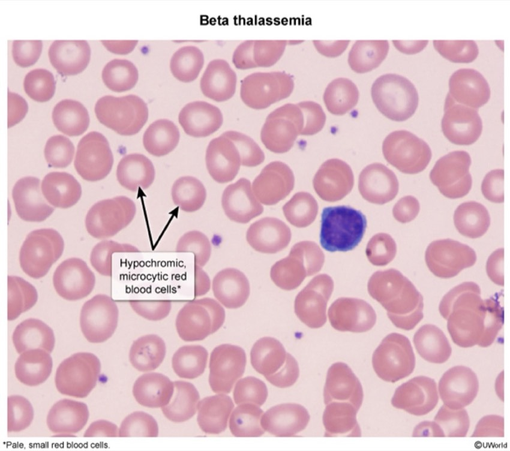
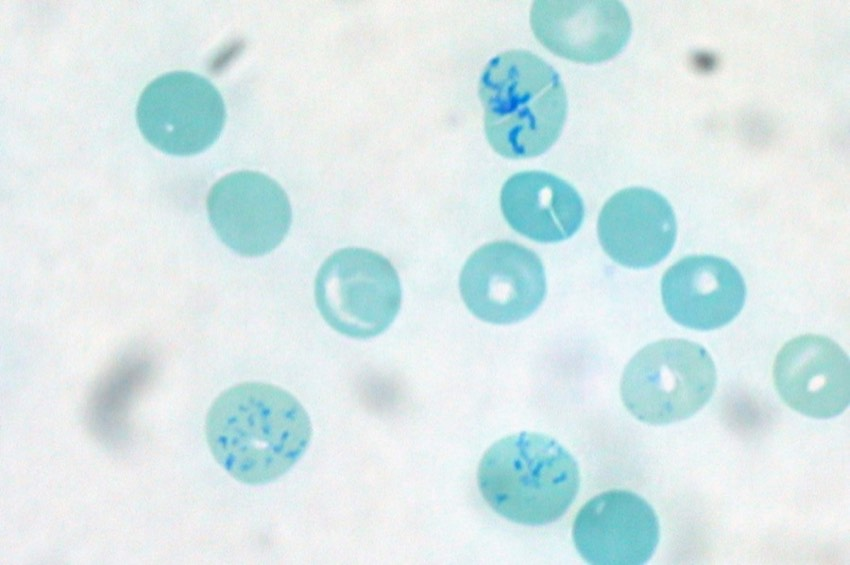
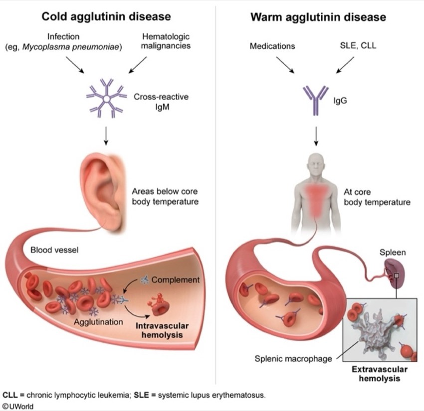

Built from your two quiz exports
Miss Review
Every question you got wrong, and nothing you got right. Each card is the trap you took, the answer, the one sentence that separates them, and a hook to hang it on.
The 90-second pass
If you read nothing else tonight, read this. Each line is one card below.
- Hematocrit ≈ 3 × hemoglobin. A mismatch means one number is wrong, and it's the light-based one.
- Side scatter = grittiness. Eosinophil is the grittiest normal white cell.
- Normal average size + very wide spread = two populations, not one.
- Erythropoietin comes from cells beside the kidney tubule, not inside it.
- Plerixafor cuts the CXCR4–CXCL12 tether that holds stem cells in marrow.
- Marrow cellularity ≈ 100 − age. Fat replaces marrow as you age.
- The buffy coat is white cells and platelets. Dissolved protein can't form a band.
- Hepcidin is the doorman; ferroportin is the door. Inflammation raises the doorman.
- Inflammation: ferritin up, iron-binding capacity down. Deficiency does the exact opposite.
- Iron deficiency in an adult man = scope both ends. One negative stool test proves nothing.
- Prussian blue stains iron, including the ring inside a sideroblast's mitochondria.
- Thalassemia trait = many small cells. Iron deficiency = few small cells.
- Raw lake fish + ribbons in stool = fish tapeworm stealing vitamin B12.
- Oral vitamin B12 works in pernicious anemia by passive diffusion of ~1% of a huge dose.
- Corrected reticulocytes = retic % × (hematocrit ÷ 45). Multiply by the ratio.
- A high hemoglobin concentration per cell means spherocytes — or an artifact.
- Only urine hemosiderin proves the destruction happened inside the vessel.
- Hypnozoites are asleep and relapse. Schizonts are awake and in every species.
- Lymphedema is a protein problem. Venous edema is a pressure problem.
- Sick child + big spleen = leukemia. Well child, no spleen = aplastic. Marrow settles it.
- Transfuse a chronically anemic child to safe (~7), not to normal.
- Wet and slow during the irinotecan infusion = atropine.
- Abiraterone diverts steroid traffic onto the salt road. Prednisone closes the on-ramp.
Laboratory Foundations
3 missesHemoglobin 17.9 with a hematocrit of 34, and milky plasma
The cross-check: hematocrit is normally about three times the hemoglobin. A hematocrit of 34% predicts a hemoglobin near 11.3, not 17.9. That gap is not biological — one number is wrong.
Which one: hemoglobin is a chemical measurement read as light absorbance. Hematocrit is calculated from counted cells × their measured size, and light cannot disturb particle counting. So the light-based number is the liar. Fatty plasma, high bilirubin and a very high white cell count all interfere the same optical way. Fix: swap the fatty plasma for saline and re-run — his true hemoglobin is ~11, and he is anemic, not polycythemic.
Why blood loss fails: whole blood is lost, so both numbers fall together. Neither phase makes two values disagree with each other.
Which white cell has the greatest side scatter?
Two axes, two properties. Forward scatter = size. Side scatter = internal complexity and granularity. The eosinophil's dense bright granules push it far right on the grittiness axis — nothing normal is grainier.
The lymphocyte is the simplest normal white cell — round nucleus, thin rim of cytoplasm — so it sits bottom-left on both axes. The monocyte is the biggest, so it sits high. Ghost cells (lysed in the tube) are low on both and get gated out as debris.

Normal average cell size five days after transfusing a microcytic patient
An average hides bimodal data. His own cells are still tiny (68); the donor's are normal. The reported 86 describes no cell actually in his circulation. Two situations do this: transfusing normal blood into a microcytic patient, and a microcytic anemia with a brisk reticulocyte response.
The tell you skipped: a normal average size with a hugely widened spread (red cell distribution width 21.4%). The spread is literally the width of the size curve — it balloons when two populations sit side by side. Ferritin of 7 confirms the untreated iron deficiency underneath.
Why cold agglutinins fail: they do inflate the average size, but they come packaged with a falsely low red cell count and an impossibly high hemoglobin concentration per cell. Neither was present. Look for the package, not the single feature.
Hematopoiesis & Marrow
4 missesWhere is erythropoietin made?
Beside the tubule, not inside it. These fibroblast-like cells sit in the interstitium between tubules and capillaries — which is the whole design. From there they sense the oxygen in blood already delivered to the energy-hungry tubules, making them a true tissue oxygen sensor rather than a pressure sensor.
Don't confuse the kidney's three jobs: peritubular interstitium → erythropoietin. Proximal tubule → activates vitamin D (the other endocrine failure of kidney disease, giving renal bone disease). Juxtaglomerular cells → renin, which senses pressure, not oxygen.
The buried clue was the low reticulocyte count — it establishes production failure, which is what a missing hormone signal looks like.
The second agent added when stem cell collection fails
The niche is an anchor, not a warehouse. Marrow stromal cells secrete CXCL12 (also called stromal cell-derived factor 1); stem cells carry its receptor CXCR4. That bond is the rope tying them in place. Plerixafor is a reversible CXCR4 blocker — cut the rope and stem cells are in the blood within hours, which is exactly the 12-hour rise described.
Why selectins fail: they mediate white cells rolling onto inflamed endothelium to get into tissue. Wrong compartment, wrong direction.
45% marrow cellularity in a 70-year-old with low counts
You had the right variable running backwards — that is the designed trap. Marrow is progressively replaced by fat with age, so cellularity falls. Newborn ≈ 100%. You, in your twenties ≈ 75%. A 70-year-old ≈ 30%.
So her predicted value is ~30% and her measured 45% is normal to mildly increased. The trap is reading 45% as "low" because it's under half. A marrow making plenty of cells while the blood counts are low points away from production failure and toward destruction, sequestration, or ineffective production.

The thin grey layer after spinning a tube of blood
Only particles sediment. Proteins are dissolved in the plasma — they give the top layer its colour and viscosity but can never form a discrete band. Spinning separates by density: red cells at the bottom (densest, ~45%), white cells and platelets at the interface (~1%), plasma on top (~55%).
One tube is a diagnostic map: bottom layer = the anemias and polycythemias. Middle = the leukemias and low white counts. Top = the paraproteins and clotting disorders. A visibly thick buffy coat means marked leukocytosis; milky plasma means fat.
Anemia I · Impaired Production
7 misses — your weakest blockRheumatoid arthritis, iron tablets for 3 months, no response
Right molecule, wrong direction — the designed trap. Inflammation → interleukin-6 → the liver makes more hepcidin → hepcidin binds ferroportin, the only exit iron has from a gut cell or a macrophage, and destroys it. Increased ferroportin would export more iron and improve her. In this disease ferroportin activity is decreased.
Why the tablets failed: oral iron is absorbed into the gut cell normally and then cannot leave it, because the exit is gone. The treatment is to control the arthritis.

Iron, ferritin, binding capacity and marrow iron in untreated Hodgkin lymphoma
Same hepcidin mechanism, asked as a row of four. A normal-sized, low-output anemia months into a malignancy, with a high sedimentation rate and no bleeding, is anemia of inflammation. It can appear as early as 1–2 months after disease onset, and Hodgkin disease is named as a cause.
| Test | Iron deficiency | Anemia of inflammation | Why |
|---|---|---|---|
| Serum iron | Low | Low | The one test that can't tell them apart |
| Ferritin | Low | High | Empty tank vs. full tank (and an acute phase reactant) |
| Iron-binding capacity | High | Low | Transferrin is a negative acute phase reactant — fewer cups |
| Marrow macrophage iron | Absent | Increased | Exactly where hepcidin locked it |
61-year-old man, textbook iron deficiency, negative stool test — next step
The diagnosis was already made — small cells, wide spread, low iron, high binding capacity, ferritin of 7, saturation of 6%, reactive high platelets. The question is where the iron went, and a marrow stain cannot answer that. A ferritin of 7 already proves the stores are empty, so the invasive procedure adds nothing.
The highest-yield sentence in the anemia block: iron deficiency in an adult man or a postmenopausal woman is gastrointestinal blood loss until proven otherwise. Colorectal cancer can present with iron deficiency and nothing else.
The decoy: a single negative stool occult blood test. Gut bleeding is intermittent, so one negative does not exclude a source and does not change the plan.

A special stain on marrow in a 72-year-old with high iron everywhere
Prussian blue is the one special stain routinely run on marrow. It answers two questions at once: how much storage iron sits in macrophages, and whether iron is abnormally deposited inside red cell precursors. A ring of blue granules around the nucleus = iron trapped in perinuclear mitochondria because it can't be built into heme = a ringed sideroblast.
The panel set it up: large cells, other low counts, an older man, and iron high across the board — high iron, high ferritin, low binding capacity — with normal B12 and folate. That is iron present but unusable. Here: myelodysplasia. Note the low binding capacity with a high ferritin rules out iron deficiency outright.
Myeloperoxidase is the granulocyte stain — it backs up Auer rods in acute myeloid leukemia, and the stem gave no increase in blasts.

Lifelong mild anemia, tiny cells, red cell count of 6.1 million
The red cell count is the discriminator, and it separates the two microcytic anemias from the blood count alone. In thalassemia the marrow makes many small cells — her count is high at 6.1 million. In iron deficiency the marrow makes few small cells, because it can't build hemoglobin at all.
Her normal ferritin (96) and narrow spread (13.1%) agree: thalassemia makes a uniformly small population; iron deficiency widens the spread. Sideroblastic anemia would come with a high ferritin and ringed sideroblasts, and never causes a high red cell count.
The stakes: the treatments are opposite. Thalassemia trait has normal or high iron stores — supplementing gains nothing and risks overload. Confirm with iron studies plus hemoglobin electrophoresis.

Raw lake fish, ribbon-like segments in stool, low vitamin B12
The mechanism is competitive uptake — something in the gut eats the vitamin B12 before the patient can. The fish tapeworm comes from raw or undercooked freshwater fish, grows to several metres in the small intestine, sheds flat ribbon-like segments in stool, and absorbs B12 avidly. Two buried clues: cured raw Great Lakes fish, and the ribbons. Treat with praziquantel plus B12.
Why hookworm fails: it enters through skin from soil and feeds on blood — that's iron deficiency, giving small cells. This patient's cells are large. Opposite direction.
The other competitive-uptake cause to keep with it: small bowel bacterial overgrowth (suggested by blind loops, strictures, dysmotility).
Oral vitamin B12 working in pernicious anemia
The normal route is permanently closed — no intrinsic factor means no intrinsic-factor-B12 complex and no pickup by cubilin in the terminal ileum. So B12 must be given by a route that doesn't need intrinsic factor: intramuscular injection, or high-dose oral.
The arithmetic is the answer. Passive diffusion moves about 1% of an oral dose regardless of intrinsic factor. 1% of 1,000 micrograms ≈ 10 micrograms a day — comfortably above the few micrograms he needs. That is exactly why the dose is enormous.
Transcobalamin II is a plasma carrier that delivers B12 to tissues after absorption, and the stomach is not an absorptive site at all.
Don't drop the third problem: fixing the anemia and the neurology still leaves the atrophic gastritis and its gastric cancer risk needing surveillance.

Anemia II · Hemolysis
3 missesCorrected reticulocyte count: 8% retics, hematocrit 22.5%
Corrected reticulocytes = reticulocyte % × (patient hematocrit ÷ 45).
= 8 × (22.5 ÷ 45) = 8 × 0.5 = 4.0%
Your 1.6% is what you get by dividing by 45 instead of by the ratio, or by correcting twice. It would also wrongly reclassify this brisk hemolysis as a production failure — which is the entire point of the calculation.
Why correct at all: the raw percentage is a fraction, and in anemia the denominator has shrunk, so it always overstates output. Above 2–3% corrected = the marrow is responding, so the anemia is destruction or loss, not underproduction. Everything else agrees: lactate dehydrogenase up, haptoglobin undetectable, indirect bilirubin up, jaundice, big spleen.

Hemoglobin concentration per cell of 37.8%
This index asks how densely packed the hemoglobin is. A cell cannot manufacture extra hemoglobin beyond its ceiling, so a high value almost always means the denominator shrank: the cell lost membrane and surface area while keeping its contents, and rounded up into a sphere.
Your answer runs backwards. Reticulocytes are larger and carry proportionally less hemoglobin per unit volume — they raise average cell size and lower this ratio. Wrong direction, same as the marrow cellularity miss.
Carry the rule: a concentration above 36–37% means spherocytes, or an artifact — and the artifacts are cold agglutinins and fatty plasma, both of which this item excluded first. Here: hereditary spherocytosis or immune hemolysis.

Proving destruction happened inside the vessel, not in the spleen
Four of the five options are shared and therefore localize nothing. Your pick only says heme is being broken down faster than the liver conjugates it — splenic macrophages do that just as efficiently as a bursting vessel.
| Shared — useless for location | Inside the vessel only | In the spleen only |
|---|---|---|
| High reticulocytes High lactate dehydrogenase High unconjugated bilirubin |
Hemoglobin free in plasma (pink plasma) Hemoglobin in urine Haptoglobin absent, not merely low Urine hemosiderin |
Spherocytes Splenomegaly |
Why hemosiderin can only mean one thing: free hemoglobin in plasma is filtered → reabsorbed by proximal tubule cells → stored there as hemosiderin → those cells slough into the urine days later. It also outlasts the acute episode, after the plasma has cleared.

Infection
1 missWhy malaria from Afghanistan also needs liver-directed therapy
Schizonts are the awake liver stage and every species has them — including falciparum, which never relapses. Only vivax and ovale make the dormant form, the hypnozoite, which can reactivate weeks to months later. Clearing the smear leaves that reservoir behind.
Species identification changes management, which is why the rapid test is read as bands: here the vivax/malariae/ovale band was positive and the falciparum band negative. Vivax is also the milder, commoner one in Afghanistan.
Parasite load is reported as a percentage for a reason — it grades severity and tracks response. His is 1.8%. Falciparum can exceed 10% (severe cases 15–20%) because it infects red cells of all ages; vivax prefers young cells, which caps it. Falciparum is the one that causes cerebral malaria and death.

Lymphatics & Thrombosis
1 missWhy lymphatic blockage swells worse than venous blockage
You named the venous mechanism — the exact one the question asked you to contrast against.
Venous blockage: raises the pressure pushing fluid out. The protein-clearing route is still open, so you get a low-protein fluid that pits and responds to elevation.
Lymphatic blockage: lymphatic walls are more permeable than blood capillaries, so they are the only route large proteins have back. Remove it and protein piles up in the tissue, raises the tissue's own osmotic pull, and drags water after it. Over time the retained protein drives collagen deposition — which is why chronic lymphedema turns firm, fibrotic and stops pitting.
Two consequences from the same anatomy: the vessels are tiny (the thoracic duct is 2–3 mm; peripheral lymphatics the width of pencil lead), so there is no good surgical repair. And nodes enlarge because the bacteria, allergens and tumour cells collected there drive lymphocyte proliferation.

Pediatrics, Spleen & Prescribing
2 missesLeukemia versus aplastic anemia in a 4-year-old
Both diseases give mild generalized lymphadenopathy, so it discriminates nothing. It's the accompanying splenomegaly that separates them clinically — and the marrow that settles it.
| Aplastic anemia | Leukemia | |
|---|---|---|
| How the child looks | Well | Sick |
| Exam | Mild nodes, no organomegaly | Nodes with splenomegaly; bone pain |
| Marrow | Acellular, fat replaced it | Packed with blasts |
| Clotting studies | Normal | May be deranged |
| Treatment | Marrow transplant from matched sibling | Risk-stratified chemotherapy |
The trap in the numbers: his white count was low (2,900). Leukemia does not require a high white count — the marrow is packed with blasts that aren't being released or aren't counted as normal white cells, and the mature cells that should be there are gone.
Numbers worth carrying: ~80% of childhood acute leukemia is lymphoblastic, ~20% myeloid; within lymphoblastic, ~80% precursor-B and ~20% precursor-T. The night-waking leg pain is marrow expanding under the periosteum — a childhood leukemia sign in its own right.

Transfusing a 14 kg child with a hemoglobin of 4.1
Two numbers: 10–15 cc/kg of red cells raises hemoglobin by about 2–3 g/dL, and the target is closer to 7, not normal.
Why deliberately partial: in a slow, chronic anemia the child has had time to compensate — higher cardiac output, a right-shifted oxygen curve, expanded plasma volume. She is alert and playful at 4.1 precisely because of that. Correcting a chronically expanded circulation fast risks volume overload and heart failure. Same principle as the restrictive threshold in adults: transfuse for symptoms and risk, not to make a number look normal.
Why iron alone isn't enough: oral iron is the definitive treatment and she should get it — but the first measurable response takes about a week, and 4.1 won't wait. Then: ferrous sulfate, cut the cow's milk (part of the treatment, not an aside), expect reticulocytes in ~1 week and ~1 g/dL every 2–3 weeks, and continue iron 3–6 months after the hemoglobin normalizes to refill stores.
Antineoplastic Pharmacology
2 missesDiarrhea 20 minutes into an irinotecan infusion
Timing splits the two irinotecan diarrheas completely.
| Early (cholinergic) | Late | |
|---|---|---|
| When | During or within hours of infusion | Days afterwards |
| Mechanism | Irinotecan inhibits acetylcholinesterase | Direct mucosal injury by the active metabolite |
| Other signs | Cramping, sweating, tearing, drooling, slow pulse | Diarrhea alone; potentially fatal |
| Treatment | Atropine (antimuscarinic) | Loperamide, often high dose |
Corticosteroids treat immune-mediated colitis from a checkpoint inhibitor — which develops over weeks and never comes with tearing, drooling and bradycardia.
Background: irinotecan is a topoisomerase I inhibitor; diarrhea is its dose-limiting toxicity, which is why it sits on the gut arm of Chemo Man. The other gut signature to keep separate: 5-fluorouracil / capecitabine give diarrhea plus hand-foot syndrome.
Abiraterone, then hypokalemia and new hypertension
Abiraterone is the testosterone depleter, not a receptor blocker. It inhibits CYP17, the enzyme needed to build androgens from their precursors — and CYP17 sits in testicular, adrenal and prostate tumour tissue alike, which is why it still works after castration.
The toxicity falls straight out of where the block sits. Adrenal precursors that can no longer go down the androgen road get diverted onto the mineralocorticoid road: low potassium, fluid retention, hypertension — and the metabolic alkalosis that comes with renal potassium wasting. That is his exact panel.
Prednisone is mechanistic, not anti-inflammatory: the steroid suppresses the adrenocorticotropic hormone drive generating the excess precursors. Turn off the drive, turn off the shunt. Abiraterone's other named toxicity is liver injury.
Your pick was tumour flare from a GnRH agonist such as leuprolide — worsening bone pain, obstruction or cord compression. Not electrolytes. The receptor antagonists (flutamide, bicalutamide, nilutamide, enzalutamide, apalutamide) instead give gynecomastia.

Hemostasis Pharmacology
no misses — but you asked for thisHeparins — charge and chain length decide everything
| Drug | Size & charge | Hits | Reversal | Watch |
|---|---|---|---|---|
| Unfractionated heparin | ~15,000 Da Strongly negative (acidic polyanion) |
Factor Xa and thrombin | Protamine — full. Protamine is a positively charged base; opposite charges neutralize | Highest risk of heparin-induced low platelets; raises potassium (blocks aldosterone); bone loss with long use |
| Low-molecular-weight heparin enoxaparin, dalteparin |
~5,000 Da Same negative charge, shorter chain |
Mostly Xa | Protamine — partial (~60%) | Renally cleared — reduce dose if creatinine clearance <30. Lower platelet risk, not zero |
| Fondaparinux | ~1,500 Da pentasaccharide | Xa only | Nothing works. Protamine is ineffective | Doesn't bind platelet factor 4 → can't cause heparin-induced low platelets, so it's used to treat it. Avoid if clearance <30 |
Only a chain long enough to bridge antithrombin to thrombin affects thrombin at all. That single physical fact explains the whole table — why unfractionated heparin prolongs the clotting time and the low-molecular-weight one barely does, and why protamine's grip runs full → partial → none.
Heparin-induced low platelets — a clotting emergency, not a bleeding one
Antibodies form against the heparin–platelet factor 4 complex and activate platelets. Platelets fall on days 5–10, by more than 50%, and the danger is thrombosis.
Management: stop all heparin → start argatroban, bivalirudin or fondaparinux. Never start warfarin alone — protein C falls first and you get limb gangrene.
Warfarin — the interaction list
Charge/chemistry: not a charge drug — heavily protein-bound, cleared by CYP2C9, target is vitamin K epoxide reductase. Blocks factors 2, 7, 9, 10 plus proteins C and S. Mnemonic: "1972."
| Direction | Agents | Mechanism |
|---|---|---|
| ↑ INR — bleeding | Amiodarone, metronidazole, trimethoprim-sulfamethoxazole, fluconazole, ciprofloxacin, fluvoxamine | CYP2C9 inhibition → less warfarin cleared |
| ↑ INR — bleeding | Acute alcohol binge; any gut-flora-killing antibiotic | Acute enzyme inhibition; loss of bacterial vitamin K |
| ↓ INR — clotting | Rifampin, carbamazepine, phenytoin, St John's wort, chronic alcohol | Enzyme induction → cleared faster |
| ↓ INR — clotting | Leafy greens | Vitamin K outcompetes warfarin at the target |
| Either, at any INR | Aspirin and other antiplatelets | Pharmacodynamic — more bleeding without moving the number |
| Dose varies hugely | CYP2C9 and VKORC1 variants | Metabolism speed and target sensitivity — why you titrate to INR, not weight |
Trimethoprim-sulfamethoxazole is the highest-risk one because it does both at once: inhibits CYP2C9 and kills the gut flora that make vitamin K.
Reversal: vitamin K + 4-factor prothrombin complex concentrate — give both. The concentrate corrects the INR now; vitamin K restores the patient's own factor production so the INR doesn't rebound as the concentrate clears. Plasma only if the concentrate isn't available.
Onset trap: factor 7 has the shortest half-life, so the INR moves before the patient is actually anticoagulated → bridge for at least 5 days. Teratogenic. Counselling point: keep greens consistent, don't avoid them.

Direct oral anticoagulants — interactions and reversal
| Drug | Target | Interactions & cautions | Reversal |
|---|---|---|---|
| Dabigatran | Thrombin, directly | Renally cleared; dyspepsia; P-glycoprotein substrate; must stay in its original bottle — moisture-sensitive | Idarucizumab — an antibody fragment binding it with ~350× thrombin's affinity; works in minutes. Dialysis clears ~57% over 4 h |
| Apixaban Rivaroxaban Edoxaban | Factor Xa, directly | All three are P-glycoprotein substrates and CYP3A4-dependent. Apixaban safest all round · Rivaroxaban needs a meal · Edoxaban avoid if clearance >95 | 4-factor prothrombin complex concentrate. Andexanet alfa was the specific agent but was withdrawn in 2026 |
| Argatroban Bivalirudin | Thrombin, directly (given by vein) | The drugs for heparin-induced low platelets; bivalirudin is the catheterization-lab one | None exists — supportive care, short half-lives |

Antiplatelets and clot-busters
| Drug | Mechanism | Interactions & cautions | Reversal |
|---|---|---|---|
| Aspirin | Irreversibly acetylates cyclooxygenase-1 for the platelet's 7–10 day life | Additive bleeding with everything below | None — platelet transfusion if bleeding |
| Clopidogrel | Irreversible ADP-receptor block | A prodrug needing CYP2C19. Poor metabolizers get little benefit, and omeprazole blunts it — use pantoprazole if a proton pump inhibitor is needed | None |
| Prasugrel | Irreversible | More potent, more bleeding. Contraindicated after stroke or transient ischemic attack; avoid if age ≥75 or weight <60 kg | None |
| Ticagrelor | Reversible | Not a prodrug, so no CYP2C19 issue. Causes dyspnea and slow rhythms. Maintenance aspirin must stay ≤100 mg/day or it loses effect | None |
| Cangrelor | Reversible, intravenous | On and off in minutes — the bridge during stenting in a patient who can't swallow | Stop the drip |
| Vorapaxar | Blocks the thrombin receptor on platelets | Intracranial bleeding risk defines this drug; very long-acting | None practical |
| Dipyridamole Cilostazol | Raise cyclic AMP inside the platelet | Both vasodilate → headache and flushing. Cilostazol carries a boxed warning: contraindicated in heart failure | — |
| Thrombolytics the "-plase" drugs | Convert plasminogen to plasmin, which eats the fibrin mesh | These destroy an existing clot rather than prevent one | Cryoprecipitate to replace fibrinogen + tranexamic or aminocaproic acid to block plasmin |
Anemia Pharmacology
no misses — but you asked for thisIron — absorption, interactions, antidotes
Charge/chemistry: iron is absorbed as the ferrous (Fe²⁺) form and needs an acid stomach to stay that way. Every major interaction is a charge interaction — something binds the metal ion and neither drug gets absorbed.
| Situation | What to know |
|---|---|
| Blunts oral iron | Proton pump inhibitors and antacids (less acid), calcium, tea and coffee |
| Mutual chelation | Tetracyclines and fluoroquinolones — iron binds the antibiotic and neither is absorbed. Separate the doses |
| Acute overdose | Almost always a child swallowing adult tablets; among the leading causes of poisoning death in young children. Antidote: deferoxamine, given parenterally — chelates free iron and is excreted in urine, classically turning it a reddish "vin rosé". Plus supportive care and whole-bowel irrigation in massive ingestion |
| Chronic overload | The price of lifelong transfusion (thalassemia major, transfused sickle cell). There is no physiologic route to excrete iron — it piles into heart, liver and endocrine organs. Remove with deferasirox or deferiprone (oral) or deferoxamine |
Vitamin B12 and folate
Vitamin B12: in pernicious anemia give a route that doesn't need intrinsic factor — intramuscular, or high-dose oral riding the ~1% passive leak (see the Anemia I card). Metformin and proton pump inhibitors both pinch B12 — metformin at the ileum, acid blockers by failing to release it from food.
Folate vs folinic acid — the rescue rule. Methotrexate blocks dihydrofolate reductase. Giving plain folic acid is useless, because the enzyme that would activate it is exactly the one methotrexate broke. Give folinic acid (leucovorin) — it is already past the block and converts straight to active folate. You are not reversing methotrexate; you are handing the cell a folate it can still use.
Erythropoiesis-stimulating agents and the newer oral class
The ceiling is 11. Every boxed warning for these agents turns on above a hemoglobin of 11 g/dL — harm with no benefit. Also cut the dose if hemoglobin rises more than 1 g/dL in 2 weeks. Adverse effects: hypertension, clots, and tumour progression.
Vadadustat (a hypoxia-inducible factor prolyl hydroxylase inhibitor): normally these hydroxylases tag the hypoxia factor for destruction whenever oxygen is plentiful. Block them and the factor accumulates, switching on the erythropoietin gene — it convinces the cell it is at altitude. Oral, for kidney-disease anemia on dialysis ≥3 months; the oral route is the entire selling point. Side effects are exactly what altitude with thick blood gives you: hypertension and clots. (Daprodustat was pulled from the US market in late 2024 for commercial, not safety, reasons.)
Hydroxyurea — an antineoplastic moonlighting as a sickle cell drug, which is its whole side-effect profile in one line. Raises fetal hemoglobin (the threshold to remember: ≥20% reduces acute complications), start 15 mg/kg once daily. Two boxed warnings: severe marrow suppression and malignancy.
Sections you swept — don't spend tonight here
Transfusion Medicine · Benign White Cell Disorders · Coagulation I (Bleeding) · Coagulation II (Clotting) · Lymph Node Pathology · Hematologic Malignancy · Trauma, Edema & Metastasis · Geriatrics
You flagged these but got them right — a glance, not a re-study: posterior iliac crest for marrow biopsy · pernicious anemia → gastric cancer surveillance · leucovorin for methotrexate mouth sores · what the analyzer measures vs calculates · echinocytes in uremia · electrophoresis for lifelong mild anemia · cumulative anthracycline dose before more doxorubicin · lenalidomide plus dexamethasone → venous clots · anal canal below the dentate line drains to superficial inguinal nodes.
Glossary
short forms used above- Corrected reticulocyte count
- Reticulocyte % × (patient hematocrit ÷ 45). Above 2–3% = marrow responding.
- Red cell distribution width
- The spread of red cell sizes — the standard deviation of volume divided by the average volume. Widens when two populations coexist.
- Mean corpuscular volume
- Average red cell size.
- Mean corpuscular hemoglobin concentration
- How densely packed the hemoglobin is inside the average cell. Above 36–37% = spherocytes or artifact.
- Total iron-binding capacity
- How many transferrin "cups" are available. Transferrin is a negative acute phase reactant, so inflammation lowers it.
- Ferritin
- Stored iron — and also an acute phase reactant, which is why inflammation raises it even when iron is unavailable.
- Hepcidin / ferroportin
- Hepcidin is the liver hormone that destroys ferroportin, the only exit iron has from a gut cell or macrophage.
- Prothrombin time / INR
- Tests the tissue-factor arm plus the shared trunk; most sensitive to factor 7. The INR is the standardized version used to dose warfarin.
- Activated partial thromboplastin time
- Tests the arm starting on a negatively charged surface (factors 12, 11, 9, 8) plus the shared trunk.
- CYP2C9 / CYP3A4 / CYP2C19
- Liver enzymes. 2C9 clears warfarin · 3A4 handles the factor Xa inhibitors · 2C19 activates clopidogrel.
- VKORC1
- Vitamin K epoxide reductase — warfarin's actual target. Genetic variants change the dose needed.
- P-glycoprotein
- A drug-efflux pump. All three factor Xa inhibitors are substrates, so inhibitors of it raise their levels.
- 4-factor prothrombin complex concentrate
- A concentrate of clotting factors 2, 7, 9 and 10 — the fast half of warfarin and factor Xa inhibitor reversal.
- Platelet factor 4
- The platelet protein heparin binds to form the antigen in heparin-induced low platelets.
- Hypnozoite vs schizont
- Hypnozoite = the dormant liver form, only in vivax and ovale, causes relapse. Schizont = the active dividing form, present in every species.
- CXCR4 / CXCL12
- The receptor–ligand pair tethering stem cells to the marrow niche. Plerixafor blocks the receptor to release them.